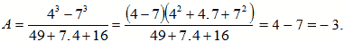
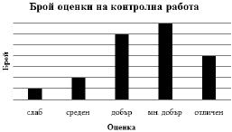
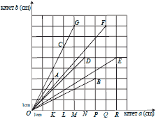
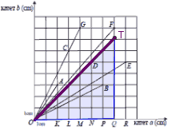
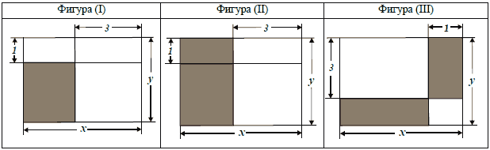

ПЪРВИ МОДУЛ
ЗАДАЧИ С ИЗБИРАЕМ ОТГОВОР
Отговорите на задачи от 1. до 16. включително отбележете в листа с отговори!
Критерии за оценяване
- От Зад. 1 до Зад 5. включително - по 2 точки
- От Зад. 6 до Зад 8. включително - по 3 точки
- От Зад. 9 до Зад 12. включително - по 2 точки
- Зад. 13 - 3 точки
- Зад. 14 - 2 точки
- Зад. 15 и Зад. 16 - по 3 точки
- Изразът x + е тъждествено равен на:
Проверете отговор
Моля, изберете отговор.
Отговорът е грешен.
Упътване: Разделете числител на знаменател, за да превърнете обикновената дроб в десетично число.
Отговорът е верен.
Вижте решение
Решение:
- Делим числител на знаменател, за да превърнем обикновената дроб в десетична:
= 0,25.
- Верен отговор В).
- Разликата 25.25 – 5.5 е равна на произведението:
Проверете отговор
Моля, изберете отговор.
Отговорът е грешен.
Упътване: Извършете означените действия, като започнете с умножението.
Отговорът е верен.
Вижте решение
Решение:
- Извършваме означените действия:
25.25 – 5.5 = 625 – 25 = 600.
- След умножаването на числата в отговор Г), получаваме същото число.
- Верен отговор Г).
- Нормалният вид на (x – 0,2)2 е многочленът:
Проверете отговор
Моля, изберете отговор.
Отговорът е верен.
Вижте решение
Решение:
- Използваме Формула (2):
(x – 0,2)2 = x2 – 0,4x + 0,04.
- Верен отговор А).
- При a = – 2 изразът 5 – 3(a – b) е тъждествено равен на:
Проверете отговор
Моля, изберете отговор.
Отговорът е грешен.
Упътване: Опростете израза и заместете а с неговото равно.
Отговорът е верен.
Вижте решение
Решение:
- Разкриваме скобата:
5 – 3(a – b) = 5 – 3a + 3b.
- Заместваме:
5 – 3.(– 2) + 3b = 5 + 6 + 3b = 11 + 3b.
- Верен отговор А).
- Коренът на уравнението 2 – 2x = е:
Проверете отговор
Моля, изберете отговор.
Отговорът е верен.
Вижте решение
- Решенията на неравенството са:
Проверете отговор
Моля, изберете отговор.
Отговорът е верен.
Вижте решение
- Турист изкачва един връх за 6 чàса със скорост x km/h и се връща обратно за 3 пъти по-малко време, като се движи с 4 km/h по-бързо. Уравнението, което изразява тази зависимост, е:
Проверете отговор
Моля, изберете отговор.
Отговорът е грешен.
Упътване: Използвайте това, че туристът изминава един и същи път при изкачване и при слизане.
Отговорът е верен.
Вижте решение
Решение:
- Използваме Формула (1.1).
- При изкачване туристът изминава път sизкачване = 6x.
- Времето за слизане е 6 : 3 = 2 чàса, а скоростта му е (x + 4) km/h, тогава изминатият път е sслизане = 2(x + 4).
- Пътищата на отиване и връщане са равни, т.е. sизкачване = sслизане 6x = 2(x + 4).
- Верен отговор А).
- Един снегорин почиства булевард за 5 чàса, а втори снегорин почиства същия булевард за 3 чàса. За колко чàса двата снегорина ще почистят от този булевард, ако работят заедно?
Проверете отговор
Моля, изберете отговор.
Отговорът е грешен.
Упътване: Използвайте правилото за решаване на задачи
от работа.
Отговорът е верен.
Вижте решение
Решение:
| |
сам
върши
цяла
работа в
часове |
N |
t |
A |
цяла
работа
в части
A* |
| 1 Снег. |
5 |
|
x |
.x |
1 |
| 2 Снег. |
3 |
|
x |
.x |
- Съставяме таблица и попълваме ясно дадените величини, а това са:
- времето за което 1 Снег. и 2 Снег. могат да свършат цялата работа сами.
- щом не е уточнено колко е цялата работа приемаме, че тя е 1, т.е. А* = 1.
- Изчисляваме производителността N1 и N2 на всеки от двата снегорина, като разделим цялата работа на времето за което всеки от тях свършва цялата работа, и ги нанасяме в таблицата.
- Отбелязваме с х времето за което 1 Снег. е работил (това време е едно и също за двата снегорина, защото работят заедно).
- От формула (2) изчисляваме работата А1 – свършена от 1 Снег. и А2 – свършена от 2 Снег..
- Съставяме уравнението използвайки формула (3), като отчетем, че общата работа е A = и го решаваме:
A1 + A2 = A .x + .x = 3x + 5x = 12, т.е. x = = 1 = 1h 30 min.
- Верен отговор Г).
- Коко пробягал 3 километра за 15 минути. Седнал да си почине за 15 минути и продължил да тича по маршрута си. Коя от графиките представя вярно движението му?
Проверете отговор
Моля, изберете отговор.
Отговорът е грешен.
Упътване: Използвайте това, че на абсцисната ос е нанесено времето, на ординатната ос – пътя, а почивката се представя с отсечка успоредна на абсцисната ос.
Отговорът е верен.
Вижте решение
Решение:
- Всяка координатна система има две оси:
- Абсцисна ос – това е хоризонталната ос (оста х).
- Ординатна ос – вертикалната ос (оста y).
- При всички дадени графики на оста х е нанесено времето (в минути), а на оста y – пътя (в километри).
- На графиката почивката се представя с отсечка успоредна на абсцисната ос.
- Даденото условие е представено правилно на графиката от отговор В).
- Верен отговор В).
- На чертежа AC = BC. Мярката на ACB е:
Проверете отговор
Моля, изберете отговор.
Отговорът е верен.
Вижте решение
Решение:
- От чертежа се вижда, че BAC = 25° + 25° = 50°.
- ΔABC – равнобедрен ABC = BAC = 50°.
- Прилагаме Теорема за сбор на ъгли в ΔABC:
BAC + ABC + ACB = 180° 50° + 50° + ACB = 180° ACB = 80°.
- Верен отговор А).
- Дължините в сантиметри на страните на триъгълник могат да са:
Проверете отговор
Моля, изберете отговор.
Отговорът е верен.
Вижте решение
Решение:
- Един триъгълник съществува, ако са изпълнени Теоремите признаци на неравенство на триъгълник.
- Проверяваме за кои от дадените триъгълници се изпълняват тези теорема (За Теорема 1 е достатъчно да проверим само неравенството за най-голямата страна, а за Теорема 2 – неравенството за най-малката страна):
- Триъгълник със страни от отговор А) НЕ съществува, защото не се изпълнява Теорема 1, имаме 2 = 0,5 + 1,5.
- Триъгълник със страни от отговор Б) СЪЩЕСТВУВА, защото се изпълнява Теорема 1, имаме 3 < 1,5 + 2 и Теорема 2, защото имаме 1,5 > 3 – 1.
- Останалите отговори не ги проверяваме.
- Верен отговор Б).
- Кои три точки на чертежа образуват триъгълник, който е еднакъв на триъгълника ABC?
Проверете отговор
Моля, изберете отговор.
Отговорът е верен.
Вижте решение
Решение:
- ΔABC ≅ ΔMNP по III признак, защото:
- AB = MN (от ΔADB ≅ ΔMD1N по I признак).
- BC = NP (от ΔBEC ≅ ΔNE1P по I признак).
- AC = MP (от ΔACF ≅ ΔMF1P по I признак).
- Верен отговор В).
- На чертежа s1 и s2 са симетралите съответно на страните AC и BC в триъгълника ABC. Ако AB + KP = 24, дължината на CQ е:
Проверете отговор
Моля, изберете отговор.
Отговорът е грешен.
Упътване:
- Използвайте Основна Зад.4, за да докажете, че ΔABC е правоъгълен и CQ е медиана в този триъгълник.
- Докажете, че AQPK е успоредник и намерете AQ.
- Използвайте Теорема за медиана в правоъгълния ΔABC, за да намерите CQ.
Отговорът е верен.
Вижте решение
Решение:
- s1 и s2 са симетрали в ΔABC и се пресичат върху страната AC, тогава от Основна Зад. 4 следва, че ΔABC е правоъгълен (ACB = 90°) и т. Q е среда на AB.
- Доказваме, че AQPK е успоредник:
- QP BC (по условие) и AC BC (по д-во) (I): AK || QP.
- ΔAQK ≅ ΔQBP по II признак, защото: 1) AQ = QB – по д-во, 2) AKQ = QPB = 90°, 3) QAK = BQP – като съответни ъгли на AK || QP (II): AK = QP.
- От (I) и (II) AQPK – успоредник, т.е. AQ = KP.
- Но AQ = BQ (по д-во) AQ = KP = BQ = x.
- Намираме CQ:
- AB = AQ + QB = 2x.
- По условие имаме AB + KP = 24 2x + x = 24 x = 8, т.е. AQ = 8 cm.
- Доказахме, че CQ – медиана в правоъгълния ΔABC CQ = AQ = BQ = 8 cm.
- Верен отговор Б).
За задачи 14, 15 и 16 използвайте следното условие:
На чертежа ABCD е успоредник, CH AB и CP AD.
- Ако CBH = x и CBA = 3x, стойността на х е:
Проверете отговор
Моля, изберете отговор.
Отговорът е верен.
Вижте решение
- Ако CDP = α, мярката на HCP, изразена чрез α, е:
Проверете отговор
Моля, изберете отговор.
Отговорът е грешен.
Упътване:
- Изразете DCB чрез α.
- Изразете DCP и BCH чрез α.
- Изразете HCP чрез α.
Отговорът е верен.
Вижте решение
Решение:
- DCB = CDP = α – като кръстни ъгли на (BC || AP) ∩ DC.
- BAD = CDP = α – като съответни ъгли на (AB || CD) ∩ AD.
- HBC = BAD = α – като съответни ъгли на (AD || BC) ∩ AB.
- От кратката Теорема за сбор на ъгли в правоъгълния ΔDCP получаваме:
DCP + CDP = 90° DCP = 90° – α.
- От кратката Теорема за сбор на ъгли в правоъгълния ΔBHC получаваме:
BCH + HBC = 90° BCH + α = 90° BCH = 90° – α.
- HCP = BCH + DCB + DCP = 90° – α + α + 90° – α = 180° – α.
- Верен отговор Г).
- Ако AB = 8 cm, AD = 6 cm и CP = 4 cm, дължината на СH в сантиметри е:
Проверете отговор
Моля, изберете отговор.
Отговорът е грешен.
Упътване:
- Докажете, че CDP и HBC са равни на 30°.
- Използвайте Теорема 1, за да намерите СH.
Отговорът е верен.
Вижте решение
Решение:
- ABCD – успоредник и AB = 8 cm, AD = 6 cm CD = 8 cm, BC = 6 cm.
- В ΔDCP имаме: P = 90° и CD = 2CP CDP = 30°.
- От Зад. 15 HBC = CDP = 30°.
- В ΔHBC имаме:
H = 90° и HBC = 30° CH = BC = .6 = 3 cm.
- Верен отговор Б).
ЗАДАЧИ СЪС СВОБОДЕН ОТГОВОР
Отговорите на задачи 17. – 20. запишете на съответните места в листа с отговори.
- В първата колона на таблицата са изпълнени последователно указания за привеждане на израза 2x2 – 3 – x(x – 3) – 2x в нормален вид. Попълнете празната колона, като следвате същите указания за израза (x – 1)(3 – x) – (2 – x)2.
| Пример |
|
Приведете в нормален вид
многочлена |
| 2x2 – 3 – x(x – 3) – 2x |
Указания |
(x – 1)(3 – x) – (2 – x)2 |
| 2x2 – 3 – x2 + 3x – 2x |
(А) Разкрий скобите. |
|
| x2 – 3 + x |
(Б) Направи приведение. |
|
| x2 + x – 3 |
(В) Подреди едночлените по степените им. |
|
Вижте упътване
Упътване:
Изпълнете указанието за клетките в третата колонка.
Вижте решение
Решение:
| Пример |
|
Приведете в нормален вид
многочлена |
| 2x2 – 3 – x(x – 3) – 2x |
Указания |
(x – 1)(3 – x) – (2 – x)2 |
| 2x2 – 3 – x2 + 3x – 2x |
(А) Разкрий скобите. |
3x – x2 – 3 + x – 4 + 4x – x2 |
| x2 – 3 + x |
(Б) Направи приведение. |
8x – 2x2 – 7 |
| x2 + x – 3 |
(В) Подреди едночлените по степените им. |
– 2x2 + 8x – 7 |
Критерии за оценяване
А)
- 3 точки – за правилно разкрити две скоби.
- 2 точки – за правилно разкрита първа скоба и правилно приложена формула във втората, но не са променени всички знаци или за грешка в първата скоба и правилно приложена формула във втората със сменени знаци на всички едночлен.
- 1 точка – за правилно изпълнено само едно от трите действия: разкрита първа скоба, правилна формула във втората или правилно сменени знаци.
- 0 точки – при всички останали случаи.
Б)
- 2 точки – за правилно приведение.
- 1 точка – за грешка само в едно от събираемите.
- 0 точки – при всички останали случаи.
B) 1 точка – за правилен отговор.
Общо за цялата задача 6 точки.
- Пресметнете стойността на всеки от изразите и B = 2.1,5 – 1,5.5 и сравнете получените числа.
Вижте упътване
Упътване:
За (А) използвайте формула (7), а за (В) извършете означените действия.
Вижте решение
Решение:
- За (А) използваме Формула (7):

- За (В) изнасяме пред скоба числото което се повтаря:
B = 2.1,5 – 1,5.5 = 1,5(2 – 5) = 1,5.(– 3) = – 4,5.
- Отговор:
A = – 3; B = – 4,5; B < A.
Критерии за оценяване
3 точки – по 1 точка за всяко число и за сравняването им.
Забележка: Ако едната или и двете числови стойности са сгрешени, но правилно е извършено сравняването им, задачата се оценява съответно с две или една точка.
- Диаграмата показва броя на оценките, получени на една контролна работа.
(1) Колко е процентът на броя оценки „слаб” от броя оценки „отличен”?
(2) Ако броят на оценките „среден” е n, попълнете таблицата, като изразите чрез n броя на другите оценки и общия брой на всички оценки.
| Оценка |
слаб |
среден |
добър |
мн.добър |
отличен |
общо |
| Брой |
|
n |
|
|
|
|
(3) Оценките „среден” са осем на брой. Колко е броят на всички оценки, показани на диаграмата?
Вижте упътване
Упътване:
- От диаграмата определете броя на деленията съответстващи на оценки „слаб” и „отличен”, и ги разделете.
- От диаграмата определете числото n на колко деления отговаря и запишете искания брой.
- Използвайте получените числа от подточка (2).
Вижте решение
Решение:
1)
- От диаграмата определяме, че оценка „слаб“ отговаря на 1 деление, а оценка „отличен“ – 4 деления.
- Делим двете числа, за да намерим процента:
= 25 %.
- Отговор:
25 %.
2)
- Оценка „среден“ отговаря на 2 деления, т.е. n = 2. Тогава едно деление отговаря на 0,5n.
- От диаграмата получаваме:
- оценка „слаб“ отговаря на 1 деление, тогава броят им е 0,5n.
- оценка „добър“ отговаря на 6 деления, тогава броят им е 6.0,5n = 3n.
- оценка „мн. добър“ отговаря на 7 деления, тогава броят им е 7.0,5n = 3,5n.
- оценка „отличен“ отговаря на 4 деления, тогава броят им е 4.0,5n = 2n.
- Общо всички оценки са 0,5n + n + 3n + 3,5n + 2n = 10n.
- Отговор: Попълваме таблицата.
| Оценка |
слаб |
среден |
добър |
мн.добър |
отличен |
общо |
| Брой |
0,5n; |
n |
3n; |
3,5n; |
2n; |
10n |
3)
- По условие n = 8.
- От условие (2) видяхме, че броят на всички оценки, показани на диаграмата е 10n = 10.8 = 80.
- Отговор:
80.
Критерии за оценяване
(1): 1 точка – за правилен отговор.
(2): 5 точки – по 1 точка за всяка правилно попълнена клетка в таблицата.
(1): 1 точка – за правилен отговор.
Общо за цялата задача 7 точки.
Забележка: Ако някои от данните в първите 5 клетки на таблицата са грешни, но общият сбор е правилен спрямо тази грешка, той се оценява като правилен. Ако отговорът в (3) е друго цяло число и е получен от общия брой в таблицата от (2), то той се приема за правилен.
- Диаграмата представя хипотенузите на 8 правоъгълни триъгълника с катети a cm и b cm. Всяка хипотенуза има един край в точката О и втори – в една от отбелязаните точки. Върхът при правия ъгъл на всеки такъв триъгълник е отбелязан върху хоризонталната ос. Например ОА е хипотенузата на правоъгълния триъгълник OAK с катети a = 2 cm и b = 3 cm.
(1) Във втората колона на таблицата срещу номера на всеки въпрос запишете правилния според вас отговор.
Въпрос І. Коя е хипотенузата на равнобедрен правоъгълен триъгълник?
Въпрос ІІ. Два от триъгълниците са еднакви. Кои са техните хипотенузи?
Въпрос ІІІ. Кой от триъгълниците има най-голямо лице?
Въпрос ІV. Колко са триъгълниците, в които острият ъгъл при катета а е по-малък от другия му остър ъгъл?
(2) В мрежата начертайте отсечка ОТ, която е хипотенуза на равнобедрен правоъгълен триъгълник, за който a +b = 14 cm.
Вижте упътване
Вижте решение
Решение:
(1):
Въпрос 1: На диаграмата има само един равнобедрен правоъгълен триъгълник – ΔOND. Хипотенузата на този триъгълник е отсечката OD.
Отговор: OD.
Въпрос 2: ΔOPB ≅ ΔCLO по I признак, защото: 1) BP = OL = 3; 2) OP = CL = 6; 3) OPB = CLO = 90°. Техните хипотенузи са съответно OB и OC.
Отговор: OB и OC.
Въпрос 3: От Формула (2) се вижда, че лицето на правоъгълен триъгълник зависи от произведението на двата катета. ΔOQF има най-големи катети (a = 7, b = 8).
Отговор: Триъгълник OQF.
Въпрос 4: Условието се изпълнява само за ΔOPB и ΔORE.
Отговор: 2 триъгълника.
(2):
- По условие се иска да начертаем равнобедрен правоъгълен триъгълник, т.е. триъгълник с равни катети.
- От равенството a + b = 14 a = b = 7, т.е. трябва да начертаем правоъгълен триъгълник с катети по 7.
- Тогава точка Т трябва да има координати (7; 7).
- Отговор: На чертежа се вижда отсечката
ОТ.
Критерии за оценяване
(1): 8 точки – за правилен отговор на всеки от въпросите по 2 точки.
(2):
- 3 точки – за правилно построена отсечка ОТ.
- 2 точки – ако правилно е означена точката, но не е начертана отсечката ОТ.
- 1 точка – ако е изпълнено точно едно от условията „равнобедрен правоъгълен“ или „сбор на катетите 14“.
- 0 точки – при всички останали случаи.
Общо за цялата задача 11 точки.
ВТОРИ МОДУЛ
В предоставения свитък за свободните отговори запишете отговорите на задачите с кратък свободен отговор съгласно дадените указания – 21.А), 21.Б), 22.А), 22.Б) и 22.B).
- БУРГАС – ПРАГА
Върху тази карта авиолинията “Бургас – Прага” е изобразена с отсечка. На карта с мащаб 1:10 000 000 отсечката има дължина 11,6 cm.
21.А) Препишете и попълнете пропуснатите числа в изречението.
Действителната дължина на авиолинията от Бургас до Прага е ……………….. cm, което е равно на …………….. km.
21.Б) Часовата разлика между Бургас и Прага е 1 час. Това означава, че когато местното време в Бургас е 12:00 часà на обед, в Прага местното време е 11:00 часà сутринта. Часът на излитане и кацане се задават в местно време. Една авиокомпания осъществява редовен полет с:
час на излитане от Бургас – 07:10 часà (местно време)
и час на кацане в Прага – 08:05 часà (местно време).
Колко минути е продължителността на полета на тази авиокомпания?
Вижте упътване
Упътване:
А) Използвайте пропорцията Разстояние върху картата : Действително разстояние = 1 : 10 000 000.
Б) Използвайте часовата разлика.
Вижте решение
Решение:
А)
Б)
- От часовата разлика се вижда, че времето в Прага е с 1 час по-назад.
- Това означава, че към времето на полета трябва да прибавим 1 час.
- Намираме времето на полета: 08:05 – 07:10 = 00:55, т.е. полетът е продължил 55 минути.
- Към това време прибавяме часовата разлика 1 час = 60 минути, т.е. самолетът е пътувал 115 минути.
- Отговор:
115 min.
Критерии за оценяване
А)
- 3 точки – за два правилни отговора.
- 2 точки – за правилен отговор в сантиметри и грешно превърнати в километри.
- 1 точка – за правилно превръщане от сантиметри в километри (независимо от първия отговор).
- 0 точки – при всички останали случаи.
Б)
- 2 точки – за правилен отговор.
- 1 точка – за отговор 1 час и 55 минути.
- 0 точки – при всички останали случаи.
Общо за цялата задача 5 точки.
- РАЗРЯЗВАНЕ НА ПРАВОЪГЪЛНИК
На всеки чертеж са означени размерите в сантиметри на правоъгълник, разрязан на по-малки правоъгълници, част от които са оцветени.

22.А) Намерете в коя фигура оцветената част има най-голям периметър и на колко сантиметра е равен той, ако x = 8 cm и y = 5 cm.
22.Б) Пречертайте и попълнете таблицата, като изразите чрез x и y лицето на оцветената част във всеки от правоъгълниците.
| |
Оцветени части във: |
| Изразени чрез x и y |
Фигура (I) |
Фигура (II) |
Фигура (III) |
| Лице (cm2) |
|
|
|
22.В) Нека y = (x – 7) cm и лицето на оцветената част на Фигура (І) е равно на 6 cm2. Напишете уравнение с неизвестно х, което изразява тази зависимост, и намерете всички стойности на х, за които това е вярно.
Вижте упътване
Упътване:
А) От чертежа намерете страните на всеки оцветен правоъгълник.
Б) Използвайте подходяща Формула.
В) От условието следва, че S = 20 лв. Дадената формула я записваме като уравнение и го решаваме спрямо t.
Вижте решение
Решение:
А) Намираме периметрите на всички оцветени правоъгълници и ги сравняваме:
- Фигура (I):
- Едната страна е x – 3 = 8 – 3 = 5 cm.
- Другата страна е y – 1 = 5 – 1 = 4 cm.
- PI = 2.5 + 2.4 = 18 cm.
- Фигура (II):
- Едната страна е x – 3 = 8 – 3 = 5 cm.
- Другата страна е y = 5 cm
- PII = 2.5 + 2.5 = 20 cm.
- Фигура (III): Имаме два оцветени правоъгълника: Х – хоризонтален и В – вертикален:
- Хоризонтален – едната му страна е x – 1 = 8 – 1 = 7 cm, а другата: y – 3 = 5 – 3 = 2 cm. Тогава PIIIx = 2.7 + 2.2 = 18 cm.
- Вертикален – едната му страна е 1 cm, а другата – 3 cm. Тогава PIIIв = 2.1 + 2.3 = 8 cm.
- PIIII = PIIIx + PIIIв = 18 + 8 = 26 cm.
- Сравняваме получените периметри:
PI < PII < PIIII.
- Отговор:
Фигура (III) има най-голям периметър и той е 26 cm.
Б)
Отговор:
| |
Оцветени части във: |
| Изразени чрез x и y |
Фигура (I) |
Фигура (II) |
Фигура (III) |
| Лице (cm2) |
(x – 3)(y – 1) |
(x – 3)y |
(x – 1)(y – 3) + 3 |
В)
- По условие y = x – 7.
- От Б) знаем, че SI = (x – 3)(y – 1).
- Заместваме y в SI:
SI = (x – 3)(y – 1) = (x – 3)(x – 7 – 1) = (x – 3)(x – 8).
- По условие SI = 6, тогава:
(x – 3)(x – 8) = 6 x2 – 8x – 3x + 24 = 6 x2 – 11x + 18 = 0 x2 – (2 + 9)x + 18 = 0 x2 – 2x – 9x + 18 = 0 x(x – 2) – 9(x – 2) = 0 (x – 2)(x – 9) = 0 x1 = 2, x2 = 9.
- Решението x1 = 2 не може да е търсеното, защото при x1 = 2 получаваме y = 2 – 7 = – 5, но y е страна на правоъгълник, т.е. y > 0.
- Стойността на х е само една и тя е x = 9.
- Отговор:
x = 9 cm.
Критерии за оценяване
А)
- 2 точки – за два правилни пълни отговора.
- 1 точка – за един правилен пълен отговор.
- 0 точки – в останалите случаи.
Б)
- 3 точки – по една за всеки правилен израз.
- 0 точки – в останалите случаи.
Забележка: За правилни се приемат и изрази, еквивалентни на написаните отговори.
B)
- 3 точки – за вярно уравнение и за правилен отговор.
- 2 точки – за вярно уравнение и отговори х = 9 (cm) и някое от следните х = 2; 6; 10 (cm).
- 1 точка – само за вярно уравнение.
- 0 точки – в останалите случаи, в това число и, ако не е написано уравнение, но е посочена правилна стойност за х.
Общо за цялата задача 8 точки.
Решението на задача 23 може да намерите тук.
Условието на задача 24 и указание за решаването ѝ може да намерите тук.